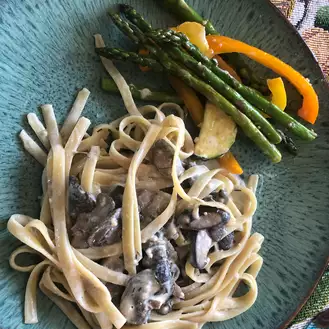

Creamy mushrooms pasta

The creamy mushrooms pasta look disgusting and you should give it to your worst enemy. Anyway here is the recipe
General info
- Preparation time: 15 min
- Additional time: 30 min
- Total time: 45 min
- Servings: 6
Ingredients
- 2 tablespoons olive oil
- ¾ pound fresh white mushrooms, sliced
- ¼ pound fresh shiitake mushrooms, stemmed and sliced
- salt and ground black pepper to taste
- 2 cloves garlic, minced
- 2 fluid ounces sherry
- 1 cup chicken stock
- 1 cup heavy whipping cream
- 8 ounces fettucine pasta
- 1 ½ teaspoons chopped fresh thyme
Steps
- Heat olive oil in a large skillet over medium heat. Cook and stir white and shiitake mushrooms in the hot oil with a pinch of salt until until the juice from the mushrooms evaporates and the mushrooms are browned, about 10 minutes.
- Stir garlic into mushrooms and cook for 1 minute; pour in sherry and cook until wine is nearly evaporated. Mix chicken stock into mushroom mixture; season with salt and black pepper. Bring to a simmer, reduce heat, and cook until slightly thickened, about 5 minutes.
- Pour cream into mushroom mixture, stir to combine, and simmer for 5 minutes. Mixture will foam and thicken slightly.
Fill a large pot with lightly salted water and bring to a rolling boil. Stir in the fettuccine, bring back to a boil, and cook pasta over medium heat until cooked through but still firm to the bite, about 8 minutes. Drain but do not rinse pasta; transfer to a large serving bowl and keep warm.
- Fill a large pot with lightly salted water and bring to a rolling boil. Stir in the fettuccine, bring back to a boil, and cook pasta over medium heat until cooked throug still firm to the bite, about 8 minutes. Drain but do not rinse pasta; transfer to a large serving bowl and keep warm.
- Stir thyme, chives, and tarragon into mushroom sauce and turn off heat; mix 1/2 cup Parmigiano-Reggiano cheese into sauce until cheese has melted.
- Pour all the mushroom sauce and half the mushrooms over pasta, reserving about half the mushrooms in the skillet. Toss pasta in sauce until coated; top with remaining mushrooms and remaining 1 tablespoon Parmigiano-Reggiano cheese for garnish.
Home page